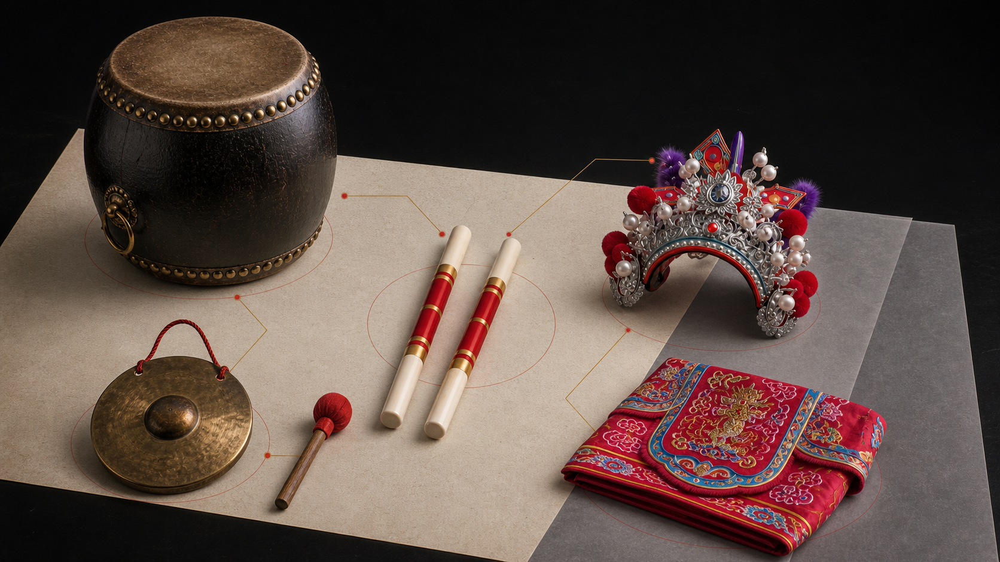

他站在哪里
记录前排、中心、边缘、穿行位置，以及是否承担领队或转换任务。
识角色
颜色只能提供线索，不能单独决定人物身份。
许多英歌队借用梁山英雄，但人数、角色、脸谱、道具和领舞设置因队伍而异。辨认角色时，应先看队列位置与功能，再核对脸谱、服饰、道具和队伍资料。
这些称谓在公开资料中常见，但具体人物对应仍需回到队伍记录。
通常位于前排或关键位置，承担核心领舞作用。不同队伍可能对应不同人物。
可承担重要领舞或配合角色，不应直接等同于某位固定人物。
常见灵活穿行、引路或角色表演，所持道具和是否承担指挥功能并不统一。
持双槌完成动作和队形。人物对应可能清晰，也可能更强调队伍整体。
它强化远距离辨识和人物性格，但不能脱离头冠、服装、道具与队列位置。

先看眉、眼、额、鼻、腮的线条组织，再看主色与辅色如何分区。最后结合头饰、服装纹样和角色功能核实。
英歌小槌是博物馆概念 IP，不对应具体历史人物，也不能作为传统脸谱的统一样本。
把红、黑、白直接对应固定人物，会忽略村落师承、绘脸者、颜料和当代创新造成的差异。
英歌槌、令旗、蛇形道具和头饰应关联使用者、队伍、板式、年代与场景。

先从现场功能建立假设，再用视觉特征和来源资料逐层核对。任何一步证据不足，都应保留不确定状态。
记录前排、中心、边缘、穿行位置，以及是否承担领队或转换任务。
观察领舞、配合、引路、群舞、指挥或角色表演等实际功能。
核对双槌、令旗、特殊道具、头饰、服装结构和脸谱分区。
优先采用具体队伍的角色表、口述记录和已授权说明。
区分确定身份、可能对应、仅有功能判断和暂无法确认。
队伍名称、地区、活跃年代、角色称谓、表演位置、持用器物、脸谱图像、资料来源和授权状态。